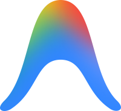
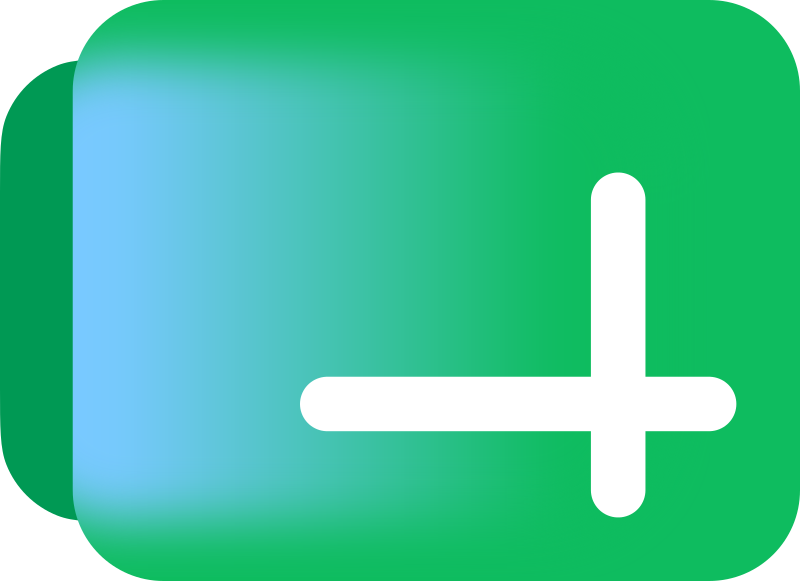

ChatGPT
Texto, imagem e voz
a partir deR$ 39,99/mês
Jornada
AntesSó ChatGPTO mundo falava de uma ferramenta só.
Lovable e as primeiras IAs que construíam coisas.
 ExplosãoUma IA nova por semana
ExplosãoUma IA nova por semanaFicou impossível acompanhar tudo.

PráticaTestar no negócioFicou só o que deu resultado real.
Soluções com IA rodando todo dia em empresas atendidas pela MTABI.
Se você parar para acompanhar todas as IAs, não vai focar em nenhuma.
Quatro meses depois
GPT-4o→GPT-6Gemini Pro→Gemini 3.8A cada versão, a IA faz mais. Olha só.
Fontes: anúncios oficiais da Anthropic, da OpenAI e do Google, setembro de 2026.
Texto, imagem, apresentação, vídeo e programação
ChatGPTGoogleSó o Google faz tudo isso. E com versão grátis em cada um.
ChatGPT+ClaudeFerramentas
As três têm versão grátis. Estes são os planos pagos de entrada.
Texto, imagem e voz
a partir deR$ 39,99/mês
Textos longos e programação
a partir deUS$ 20/mês
Tudo integrado ao seu Google
a partir deR$ 24,99/mês
No Google, uma assinatura inclui Drive, Gmail, Flow, Notebook e Antigravity.
O que vem junto
O assistente de IA do Google
Limite 4 vezes maior que o gratuito
Estuda seus documentos e gera resumo, áudio, vídeo e apresentação
Recursos a mais
Cria imagens e vídeos realistas
1.000 créditos por mês, além dos 50 diários



Suas ferramentas do dia a dia
Com o Gemini dentro
Cria sites e sistemas conversando com a IA
Limites maiores

Seus arquivos na nuvem
5 TB de armazenamento
Google AI Pro: R$ 96,99/mês · AI Plus, para começar: R$ 24,99/mês · Planos oficiais do Google no Brasil, setembro de 2026.
→ Espaço avança · ← volta · F tela cheia · P modo apresentador · M som · Home início · número + Enter vai ao slide